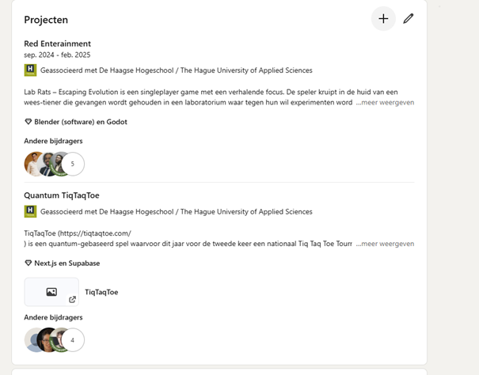

Les 1 - Elevator Pitch
Goedendag, mijn naam is Sahel Sediqi. Ik ben 23 jaar en studeer HBO-ICT aan De Haagse Hogeschool. Tijdens mijn opleiding heb ik brede kennis opgedaan in zowel front-end als back-end development. Ik werk voornamelijk met Java, C# en React en heb daarnaast ervaring met Git voor versiebeheer. Ik ben iemand die goed kan samenwerken en altijd gemotiveerd is om nieuwe vaardigheden te leren. Mijn klasgenoten omschrijven mij als een echte teamplayer. Ik ben gemotiveerd om mijn kennis in de praktijk toe te passen en mij verder te ontwikkelen binnen uw organisatie.
Linkendin
Bij mij linkedin heb ik projecten toegevoegd waarmee ik nu mee bezig ben. En projecten waarmee ik bezig was in de minor. Dat had ik veranderd omdat het niet up to date was.
Mijn LinkedIn Profiel 